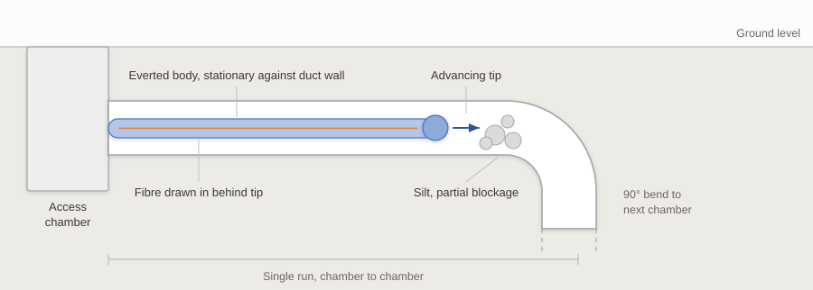
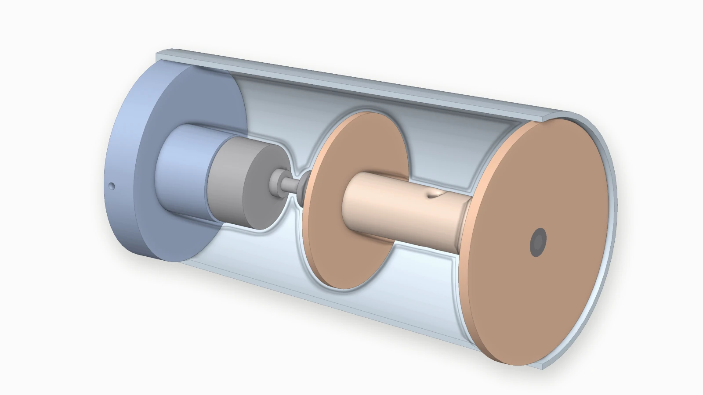
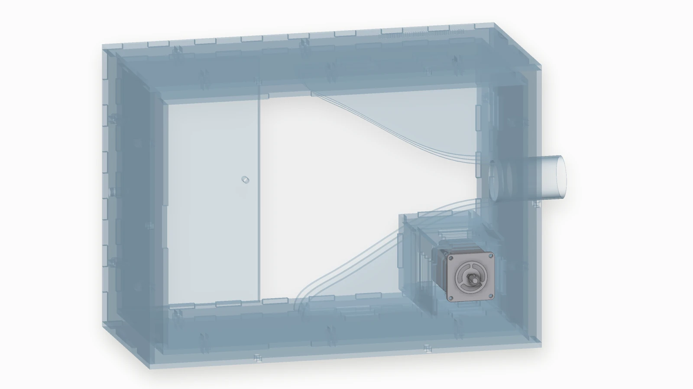
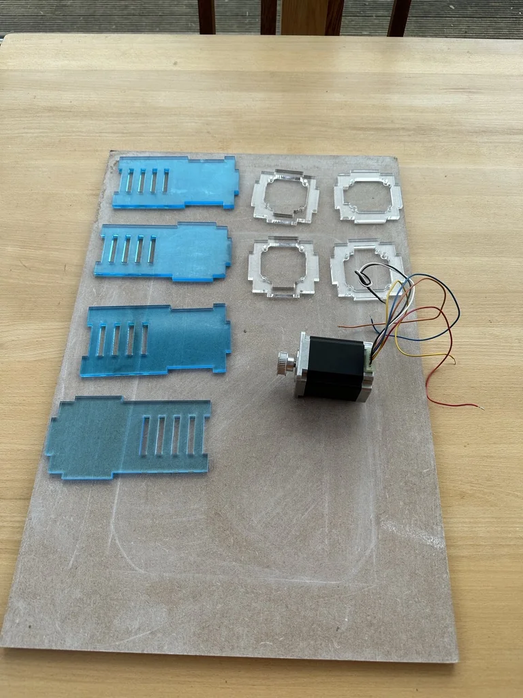
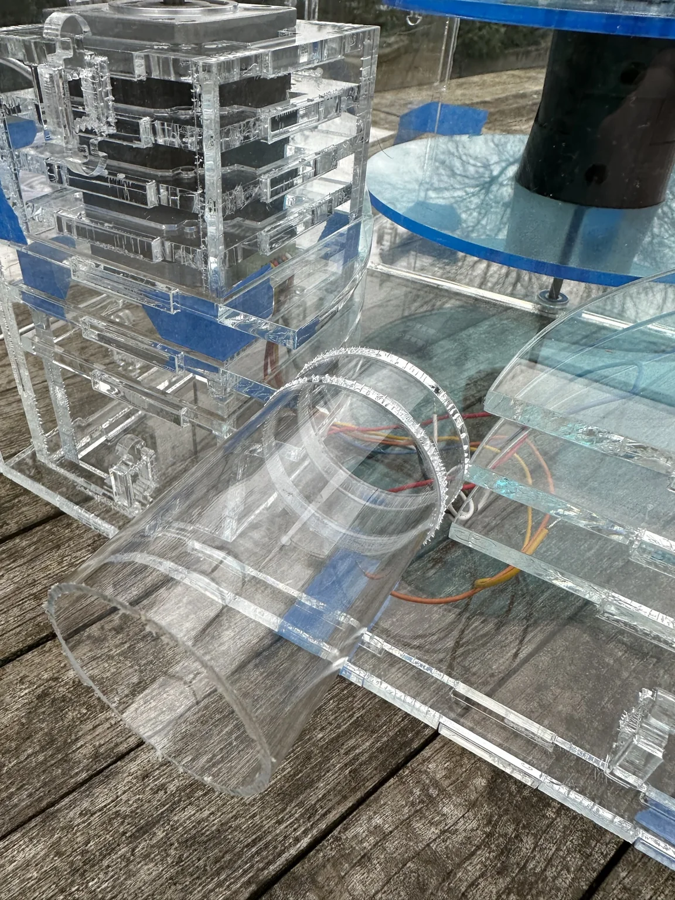
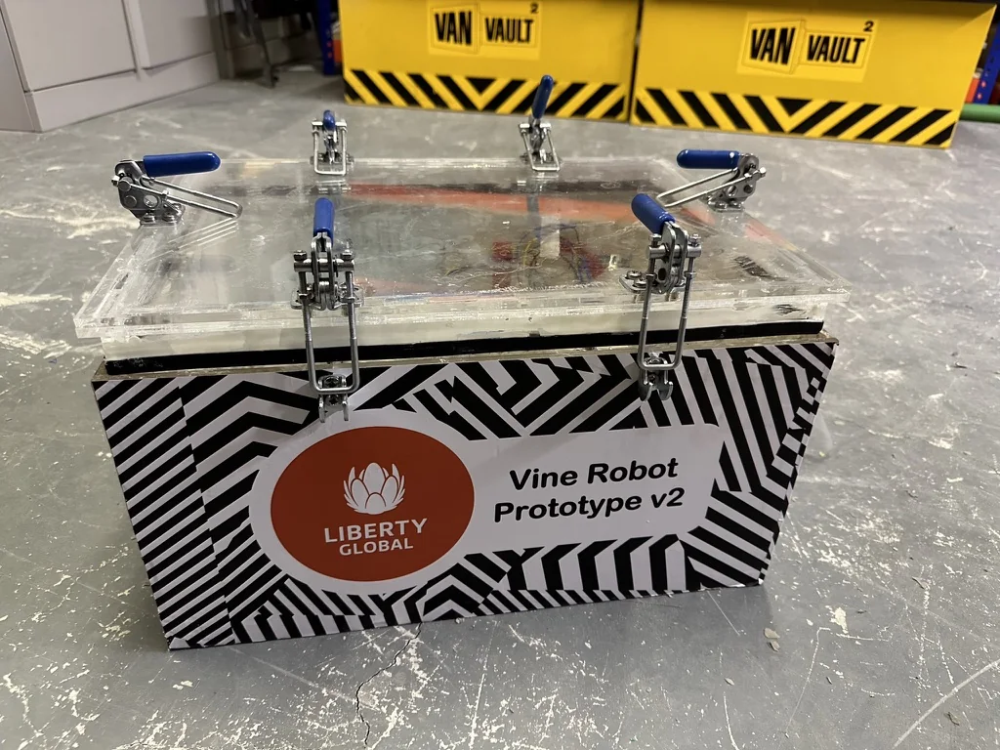
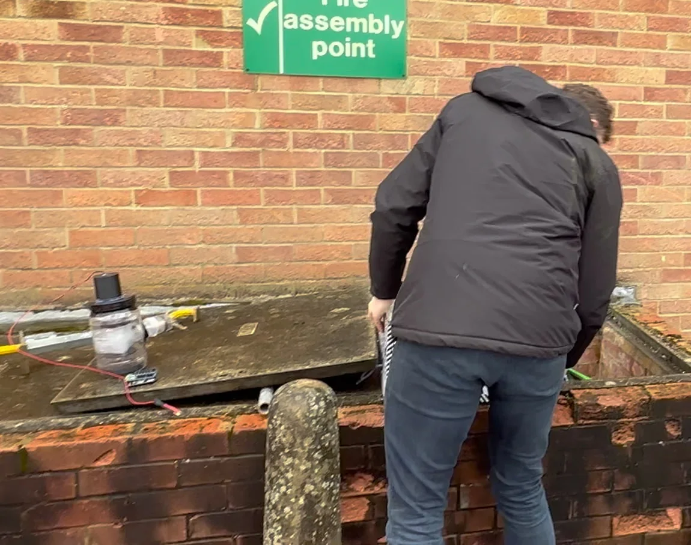

Soft robotics
A soft robot that installs fibre through buried duct
Laying fibre-optic cable into existing underground duct is slow, and the ducts are rarely clear. We built a soft robot that everts along them.

The problem
A telecoms group with a fibre rollout has a lot of duct already in the ground. Reusing it is cheaper than digging, but nobody knows what is inside. Ducts laid decades ago silt up, partly collapse and take bends a rigid rod won't follow.
Conventional installation pushes or winches cable through. That needs pulling force at one end and tolerates very little friction. It fails on the routes that are most expensive to dig up, and each failed pull means an excavation.
Why a growing robot
A vine robot grows from the tip. The body everts, so the material already inside the duct stays where it is while the tip extends. Nothing slides along the duct wall, so the force needed doesn't rise with distance as it does for a pull. The tip can also work its way past a partial blockage.
Vine robots are well established in research. Very little of that work had targeted buried telecoms duct at the lengths a real route needs.
What I did
I co-led ideation and prototyping during my graduate placements at Liberty Global. Over about nine months we built three prototypes, 3D printed and machined in-house. Each one addressed a failure in the one before. The early builds tested whether the robot would evert at all. The later ones dealt with getting round bends, handling debris and retracting cleanly when a run has to be abandoned.
Once it worked on the bench we took it into live duct in the field. The best run covered more than 200 metres in a single continuous traversal. We demonstrated it to the Group CTO, which secured backing to take it further.






Where it went
Demand from the operating companies moved it into productionisation. As of 2024 it was in production and testing across them. The company filed a patent application covering the work, which is pending.
What I would do differently
We mostly judged the robot by whether a run succeeded. That proved the concept quickly, but it left us without instrumented data. That data would have sped up the design iterations and made the productionisation handover cleaner. Next time I'd build measurement into the first prototype.
← All projects